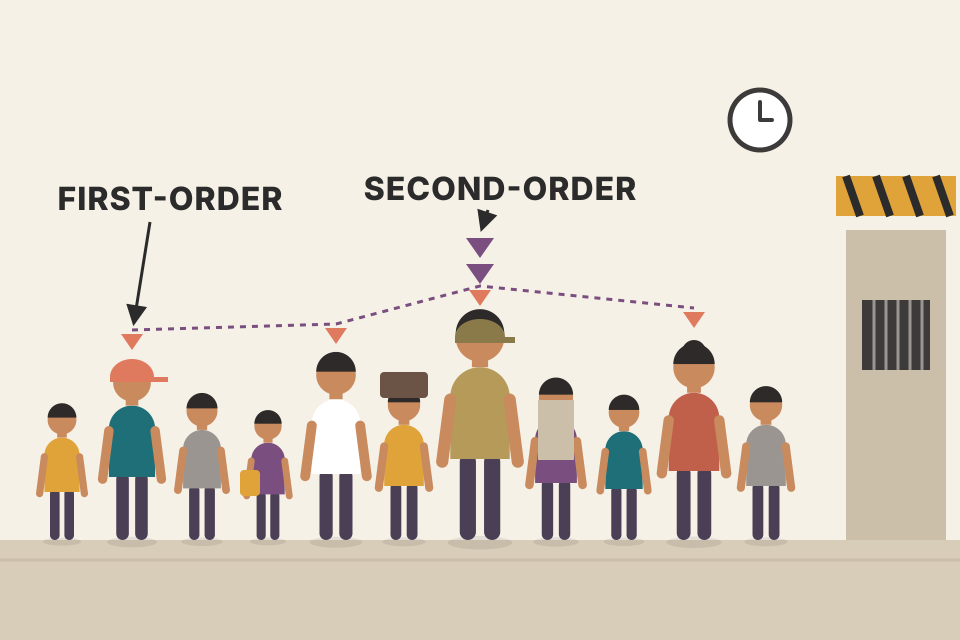
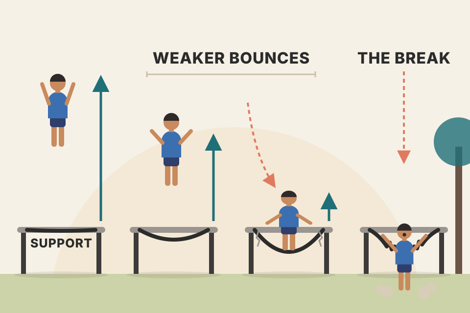
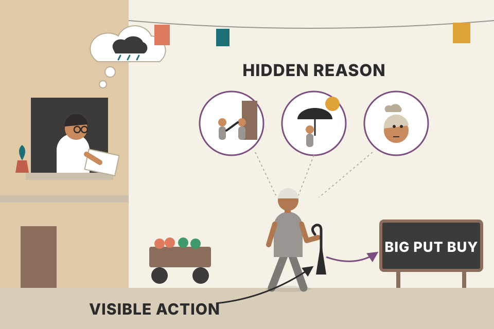
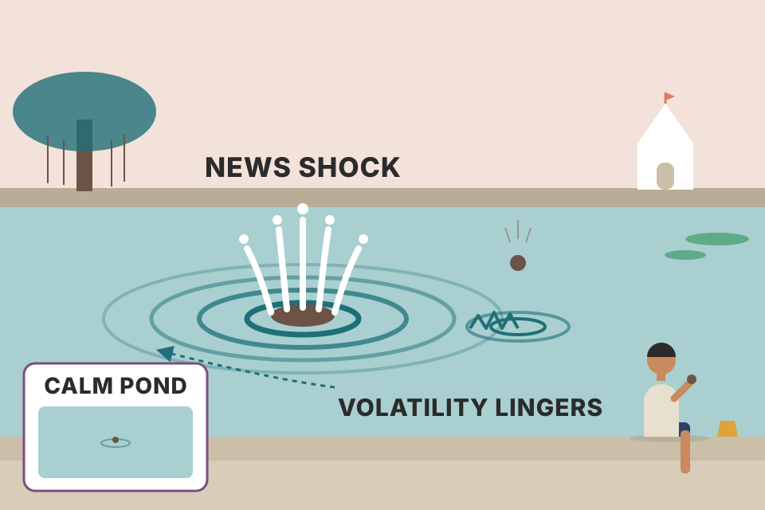

Module 1 (Chapter 1) looked at one bar at a time. This module asks how bars fit together. First come pivots, the small turning points. Then swings, trends and ranges. Then support and resistance, the prices where moves tend to stop.
Three short essays close the chapter. One shows how little we really know. One reads a trend's strength from its breakouts. One explains why big moves come in bunches.
Every chart on this page uses simulated prices, built to show one idea. The book's own charts are real markets, and I describe them in words. Press the button to roll fresh markets and see which ideas survive.
Open any price chart. You see hundreds of bars going up and down. Where do you even begin?
Grimes begins with the smallest thing you can point at. Find a bar whose high is above the bar on its left and the bar on its right. That bar is a small peak. He calls it a pivot high. A small dip is a pivot low.
Now join the peaks and dips with a line. The mess of bars becomes a clean zig-zag. Each straight stretch of the zig-zag is a swing.
Read the zig-zag like a staircase. Are the peaks and the dips both getting higher? That is an uptrend. Both getting lower? A downtrend. Anything mixed is a range, where price drifts sideways.
A range has a floor and a ceiling. Price keeps stopping near the same low and the same high. The floor is support. The ceiling is resistance. Much of this chapter is practice at watching what price does near those two.
Then Grimes pours some cold water. Three essays end the chapter. The first says we cannot see why other people trade. So a pattern can only tilt the odds a little. The second shows how to check if a trend is still healthy. The third shows one thing in markets that is truly not random. Big moves come in bunches.
So what do you do with all this? You learn to describe any chart in a few plain words. That description is the base for every trade in the later chapters.
| Word | What it means, in plain words |
|---|---|
| Bar | The drawing of one slice of trading, such as one day. It shows the open, the high, the low and the close. |
| Pivot | A bar that sticks out above, or below, the bars on both sides of it. A small turning point. |
| Swing | One clear move up or down, between two turning points. |
| Trend | A market that keeps moving mostly one way. UT is short for uptrend. DT is short for downtrend. |
| Trading range | A market that moves sideways between a low area and a high area. On this page its label is R. |
| Support and resistance | Support is a price area where falls tend to stop. Resistance is a price area where rises tend to stop. Short form: S/R or S&R. |
| Breakout | Price pushing out of a range, past its old high or its old low. |
| Pullback | A short move against the trend, before the trend carries on. |
| Volatility | How big the price moves are. High volatility means big daily moves. |
| Random walk | A price path where every step is pure chance, like a coin toss. It has no memory. |
| ATR | Average true range. It tells you how far price usually moves in one bar. |
| Futures | Contracts to buy or sell something at a later date. Each contract ends after a few months. |
This is a workbook, so most of it is practice. Sections 02 to 04 are chart drills. Sections 05 to 07 are homework and reading. Sections 08 to 10 are the three essays. Short on time? Read section 02, section 03 and section 10 first.
The module climbs a ladder. Each rung is built only from the rung below it. So a mistake low down travels all the way up. Mark one pivot wrongly, and you can end with a wrong trend call.
Module 1 was about one bar at a time. A bar is the drawing of one slice of trading, such as one day. It shows the open, the high, the low and the close.
One bar tells you little. So this module asks a new question. How does each bar sit next to its neighbours? Grimes answers with a chain of six ideas. Each one leads to the next.
What is the EMH? It is the idea that prices already hold all the known information. If that were fully true, trading would be pointless. But Grimes does not leave it as bad news. The ways the EMH fails, and the reasons it fails, can point you to profitable trading.
So what do you do with this plan? Work the drills in order. Each step needs the one before it.
Bars are letters. Pivots are the ends of words. Swings are sentences. Trends and ranges are paragraphs. You cannot read a paragraph if you cannot find where the words end. That is why the module starts with dull-looking pivot drills.
Where the picture breaks: a word means the same thing every time. A chart pattern only makes one result a little more likely.
Each level throws away detail on purpose. A pivot keeps only the turning bars. A swing keeps only the turning prices. A trend label keeps only the order of those prices: higher or lower.
Engineers call this compression. You give up the noisy bar-by-bar data. In return you get a short description you can think about.
The cost is lag, which means delay. You can only call a bar a turning point after later bars have printed. You will see that cost in every plate below.
This box is not in the book. I added it.
The introduction promises an EMH discussion. But the workbook pages for this module (pdf p75–103) have no separate EMH section. It was probably in the course videos.
The nearest material here is the volatility-clustering essay in section 10. It shows one specific way real prices differ from a pure random walk.
In short, the EMH says prices already reflect the available information. So you cannot reliably beat the market by using that information. The weakest form of the EMH says this about past prices too. And past prices are exactly what chart reading uses.
Take three bars in a row. Their highs are 50.2, 50.9 and 50.6. The middle bar reaches higher than both neighbours. It is a small peak. Grimes calls that bar a pivot high.
This section is a marking drill. You get a chart with nothing on it. You do the same two steps on every chart.
The workbook gives six real charts to mark. Each bar is one day. All six run from about February to September 2017. The answer key for each chart is on the page that follows it.
Futures are contracts to buy or sell something at a later date. Here they are one more kind of chart to mark.
How do the keys show the answers? This is how I read them off the images. A dot above a bar marks a pivot high. A dot below a bar marks a pivot low. A second-order pivot gets a second dot, stacked on the first.
Grimes gives plain advice here. Take your time. Work only while you are engaged. When you get tired and lose interest, stop and take a break.
Cramming does not help. Spread the work over a longer period. Your eyes and brain need time to get used to seeing data this way.
So what do you do with pivots? Nothing yet, on their own. They are the dots you will join into swings in section 03.

A first-order pivot high is a single person standing taller than the people right next to them in a queue. Call these people "tall in their spot".
A second-order pivot high is one of them who is also taller than the tall person before and the tall person after. You are zooming out one level. First from bars to bumps. Then from bumps to bigger bumps.
Where the picture breaks: a queue stands still. On a chart, new bars keep joining, so you only know a pivot one bar late.
Now try it. The first board lets you mark pivots yourself. The second one walks through a chart one bar at a time.
In practice mode the key is hidden. Click or tap above the middle of a bar to mark a pivot high. Click below the middle to mark a pivot low. Click again to remove a mark. Then press "Check my marks".
These numbers are mine, not the book's. Six bars have highs of 50.2, 50.9, 50.6, 51.4, 51.4 and 50.8.
Equal highs show up a lot in real data. Prices move in fixed small steps called ticks, so two bars often stop at the same price. Decide how you will handle ties, and then stay consistent.
Confirmation lag. Lag means delay. A first-order pivot needs one more bar before you can be sure. So you always know it one bar late.
A second-order pivot needs more. The next first-order pivot of the same kind must be confirmed first. So its delay changes from case to case, and it is often several bars. That is the price of the extra filtering.
Density. This means how many pivots you get. On noisy data, first-order pivots are everywhere. On a random-walk chart, roughly one bar in four is a pivot high. About as many are pivot lows.
Second-order pivots keep about a third of those. Each level keeps the important turns and drops the small jitter. It is like measuring with a coarser ruler. Watch the counts in the readout when you roll new markets.
Why mark by hand? A computer finds these in a millisecond. The step-through above does exactly that. But the drill is not about finding pivots. It trains your eye to see structure at a glance. You will need that on live charts, where nobody marks pivots for you.
tori_trendlines_explained.md uses a different pivot. There, a swing high is the highest high of the 5 candles on each side. A candle is a bar drawn in candle style. The swing high is confirmed 5 candles later. That sits roughly between Grimes's first and second order. It is stricter than 1-bar pivots. And its delay is a fixed 5 bars, not one that changes.Imagine a chart with the bars rubbed out. Only a zig-zag line is left. It joins each turning point to the next one. A top of the zig-zag is a swing high. A bottom is a swing low.
The swing charts in this section look like that. Your job is to write a label on each part of the line. Grimes wants you to use strict trend definitions. Strict means no judgement calls. There are three labels and one rule.
"Higher high" means this swing high is above the swing high before it. "Higher low" means the same thing for swing lows.
The first four charts are drawn by hand. They show the simple patterns of trend change. They follow the rules neatly, so you will probably find them easy.
The first one is solved for you. It shows how your own marks should look. Here is its story.
The other twelve charts come from real markets. Their timeframes run from 1 minute to monthly. A timeframe is how much time one bar covers.
Two of them span several years, about 2014–2017 and 2004–2017. One is an intraday chart, which means it sits inside a single trading day.
Apply the rules strictly here, and expect these to be harder. Every pattern can still be reduced to the simple rule set. But some have puzzling turns.
Grimes also asks you to think about the value and the limits of this analysis. Suppose you bought every time you marked UT. And suppose you sold short every time you marked DT. To sell short is to bet on a fall, so you gain when price drops. What would your results be?
He does not want careful records. He only wants your gut feel for the answer.
His own view is clear. This is not a stand-alone trading method. But it is a solid base for a deeper understanding of market action. So use the labels to describe a chart, not to place trades.
A staircase. Going up, each step's top is higher than the last. Each landing is higher too. That is UT.
Then one step is lower than the one before. Now you are no longer sure you are climbing. You are on a landing. That is R. You only call it a staircase down after you have both a lower top and a lower landing.
Where the picture breaks: a real staircase is built before you walk on it. A market builds each step while you are standing there.
The small tags are short forms. HH is a higher high. HL is a higher low. LH is a lower high. LL is a lower low.
Now put Grimes's question to the test. Pick a kind of market below and run the strategy on 150 of them.
Two of the markets have memory built in. Trend persistence means a move is a little more likely to carry on than to turn. Mean reversion means moves tend to turn back.
Each run is a fresh simulated market of 400 bars with zero drift. Drift is a built-in push up or down. Zero drift means there is none.
A position uses only the pivots confirmed by that bar's close. So nothing peeks at later bars. The histogram bars count how many markets ended at each net result. The cost slider is for one round trip, which is one buy plus one sell.
Simulated, not evidence about real markets. The "built-in" markets had memory coded into their returns on purpose. So any profit there was put in by me, not found.
The labels are a state machine. The state is UT, DT or R. Two kinds of event can change it.
The first event is a new swing point being confirmed. That changes one comparison: high against high, or low against low. The second event is price breaking through the last swing high or low during a leg. A leg is one straight stretch of the zig-zag.
Each event flips only one of the two comparisons. UT means both are up. DT means both are down. R means one is up and one is down. So you cannot jump from UT to DT in one event. You must pass through R. The "must go through R" rule falls straight out of the definitions.
Why it isn't a system on its own. The labels only describe what has already happened. Take a pure random walk. Knowing that the last two swings were higher tells you nothing about the next one. So the strategy earns about zero before costs. Then it loses the costs.
It makes money only if the market has trend persistence. It loses if the market mean-reverts, turning back on itself. Try the four market types and see.
The UT/DT label is a lens for reading structure. The edge has to come from somewhere else. An edge is a real advantage that repeats over many trades. Later modules look for it in pullbacks, failure tests and context.
Timeframes. The same rules work on 1-minute and monthly charts. That is because the definitions do not depend on time. Only the number of bars inside each swing changes.
tori_trendlines_explained.md uses the same rule for bias. Higher highs + higher lows = uptrend. Lower highs + lower lows = downtrend.backtest_results_summary.md has the real-market version of "structure alone isn't an edge". The daily breakout was no better than holding the same stocks. The daily pullback was about equal to cash. The weekly pullback is what worked. It adds a trend filter and an entry trigger.A stock fell to ₹480 last month and bounced. Today it is back at ₹482. Will it bounce again, or fall through? Nobody knows for sure. But the way price behaves near ₹480 gives you clues.
That old low is support, a price area where falls tend to stop. An old high where rises tend to stop is resistance. When price comes back to such a level, traders say it tests the level. Grimes writes S/R or S&R for the pair.
Each chart in this section has points marked with letters: A, B, C and so on. At every point you discuss four things.
A chart story is a short telling of what price did at one spot, and what might be behind it. Module 1 introduced it.
Many charts add their own questions on top of these four.
The work still looks backward. But you can start to think about using these tools in real time. Everything is clearer in hindsight, Grimes admits. You might not have predicted every case reliably. Still, you would have been alerted to watch the action around earlier support or resistance.
That is the use of this drill. An old level tells you where to pay attention.
One phrase comes up again and again: price rejection. Price pushes into a level and is quickly thrown back. On the bar you often see a long thin line, called a wick, pointing at the level.
| Chart (real market) | What it's there to teach (my summary of its questions) |
|---|---|
| E-mini S&P 500, 15-minute, day session (pdf p91) | The day's high and low act as reference levels for intraday trading, the trading inside one day. |
| Sugar No. 11 futures, daily (p91) | A classic trading range, read as it develops. |
| Euro / US Dollar, daily uptrend (p92) | Resistance in an uptrend is the high-water mark of the trend. |
| Euro / US Dollar, daily downtrend (p92) | Action around support, and the ways a level breaks. |
| 30-year US Treasury Bond futures (p93) | A trading range that develops over months. Textbook patterns matter, but real ones are richer and more complex. |
| E-mini NASDAQ-100 futures (p93) | Action at support and inside a range's limits. Support and resistance are zones, not exact prices. |
| Euro / Turkish Lira (p94) | Chosen on purpose to be hard. The lows do not line up. |
| Amazon (p94) | Several ways to draw the ranges. A false break above the top of a range, and a surprise bar. |
| Natural Gas futures (p95) | Questions with no definite answers. You should still ask them. |
| Health Care Select SPDR (p95) | Simple tests, rejection or not, a breakdown that fails, and a breakout seen as nothing more than resistance failing to hold. |
The table gives the headline. Here are the questions printed on each chart, in my words.
E-mini S&P 500. This is a small futures contract on the US stock index. Points A to H are marked. Ask four things at each marked bar. Was price rejected? Is this a repeated test of the same level? Would you have expected the level to hold or to break? Were you right?
Sugar. Read points A to E as the range develops. F and G are plain action against support and resistance. What do you see there that tells you about market dynamics?
Euro / US Dollar, uptrend. Grimes defines resistance simply here. It is the high-water mark of the trend: the pivot high at the last trend extreme. Look at the bar that touched each level, A to I. It either broke the level or backed away from it.
Judging by that bar, would you have expected higher prices? Were you right? What else might play into your thinking?
Euro / US Dollar, downtrend. How does the level break at A? Do the bars before B give any extra information? Was C price rejection, and would you have expected more upside? How about D? Then discuss the failure at E. Last, how did the large area at F develop?
30-year Treasury Bond. Tell the two bars at B as a chart story, and say what is surprising. Were C and E tests of resistance? D is a wide area with several tests. What is going on there, and do you see price rejection? How does the level finally break at F?
E-mini NASDAQ-100. Points A, C, D and E are action around support. Why was A not a test of support? Discuss the price rejection at B and F, at the top of the range.
Euro / Turkish Lira. Discuss every marked point. C is not an exact point, so where is support? Higher? Lower? At E, would you have expected price to go higher? What is different at G? And how hard would this have been in real time?
Amazon. D is a false break above the top of the range. Price pokes through and quickly comes back inside. How does the level break at E and at F? Why does the action at G look different? Bar H shows the kind of surprise markets throw at traders. Treat it as a chart story.
Natural Gas. Is the fall from B to C a downtrend? Or is the range widening downward? Would you have marked support differently? What happened at F, and would you have expected lower prices or a move back into the range?
Is the area around G a test of support, or is it too high? Should support be redrawn higher? Grimes says many of these have no definite answers. You should still ask them and think.
Health Care Select SPDR. This fund holds US health-care stocks. A is a simple test of support. Is there price rejection at B? At C, would you expect price to head higher or to fail? What is happening at D?
Were there any clues that the breakdown at E would fail? Is F price rejection or not? Is G any different from E? What happens at H? Last, discuss the breakout at I and compare it with C and D.

Support is a trampoline that's a bit worn out. The first jump on it bounces well. Each later jump stretches it more, and the bounces get weaker.
You watch how the person comes in, fast or slow. You watch how they land, springy or sagging. And you watch how high they go afterwards. One day the fabric tears. That is the break.
Where the picture breaks: a torn trampoline stays torn. A broken support level can start working again, sometimes as resistance.
| Test | Level | Before: move into it (ATR) | At: rejection wick | After: next 5 bars (ATR) | Outcome |
|---|
Resistance is drawn as Grimes defines it in the uptrend chart. It is the pivot high at the last trend extreme. Support is the low of the first pullback from it. A pullback is a short move against the trend.
A test is any group of bars that reaches into the zone. Widen the zone and watch near-misses turn into tests. That is the NASDAQ chart's point about zones.
The zone is sized in ATR, short for average true range. ATR tells you how far price usually moves in one bar.
The three measures are mine, not the book's:
A level matters only because people remember it. Orders gather near old highs and lows. So do stops, the prices where traders have decided to give up and get out. And the people who bought or sold there react when price comes back.
Those orders are spread over a band of prices, not one exact tick. So the level behaves like a zone.
Price rejection is a long wick back away from the level, with a close away from it. It shows that the orders waiting there soaked up the push.
A slow, grinding approach with shrinking pullbacks shows pressure building. And repeated tests often wear a level down.
A false break goes through the level and then quickly back inside. It traps the traders who acted on the break. Their exits then push price the other way.
None of this is certain. That is why the drill asks what you would have expected, and whether you were right. Over time you learn how often your reading works.
backtest_results_summary.md trade the same kind of intraday reference level. The 5-minute long + short version held up on Nifty 200 as a lead to paper trade. The 15-minute version failed the re-check.Your homework this week has no answer key. You write it yourself, from live markets.
A chart story is a short telling of what price did at one interesting spot. This is the last module with chart-story work of its own. There are no set examples this time. You take them from current markets.
This week, look at markets you trade or want to trade. Think about the action at interesting points as a chart story. Save the charts, as screenshots or printouts, to look at again later.
Grimes admits the exercise was stylised, a bit artificial on purpose. It was built to make you look deeply into the chart. You notice small details. And you ask what the market dynamics might be.
Learning to read a new script. At first you sound out each letter on purpose. After a couple of weeks you read words at a glance. Drilling a thousand more letters adds little. The chart story is the sounding-out stage.
Where the picture breaks: a script has a fixed alphabet. Markets keep making shapes you have not seen before.
Why do short, spaced sessions beat one long session? Because recognising a pattern is a skill of the eye. Your brain needs to see things again and again, with sleep in between. That is how it builds the "glance" that experienced traders have.
Levelling off after 20–30 stories also makes sense. By then you ask the questions without thinking. After that, more of the same drill adds less than real-time practice does.
Here is a strange piece of homework for a trader with a computer. Take a pencil and draw the chart yourself, bar by bar.
Grimes says to keep doing it. It is still a valuable exercise. Plan to continue it for the next few modules of the course.
Module 1 described several ways to do it. Which one you pick does not matter much. What matters is that you do it.
It should not eat your time either. Grimes jokes that he has not invented a special kind of torture. A few minutes every day is enough. But it must be every single day. If you trade intraday, make it a few minutes each hour.
The reward, he says, is a deep understanding of price action. That is the way price moves, bar after bar.
Copying a map by hand versus glancing at a photo of it. After you copy it, you know where every river bends.
Drawing each bar does the same. It forces you to notice where the bar opened and how far it reached. You also see where it closed, compared with yesterday.
Where the picture breaks: a map is finished before you copy it. A chart grows a new bar every day.
Drawing one bar takes a few seconds per number. In those seconds you compare it with yesterday. Is the high higher? Is it an inside bar, one that stays within yesterday's range? Did it close near the low?
That is the pivot and swing work of sections 02–03. But now you do it live, one bar at a time, with no hindsight.
It is the slow, careful version of real-time reading. Sections 04 and 09 ask you for that same reading at full speed.
This workbook goes with a bigger book. Each module tells you which pages of it to read.
The book is Grimes's The Art and Science of Technical Analysis: Market Structure, Price Action, and Trading Strategies (Wiley, 2012). This week's reading is a bit longer than last week's. It expands on the specific shapes of trends and trading ranges.
| Pages (printed, 2012 book) | Topic | Matches on this page |
|---|---|---|
| 13–18 | Introduction to the two forces, and pivots | section 02 (the two forces come in Module 3) |
| 19–21 | Basic swing patterns | section 03 |
| 49–64 | Trends | sections 03, 09 |
| 97–120 | Ranges | section 04 |
| 78–84 & 93–96 | Trend analysis | sections 03, 09 |
The "two forces" are momentum and mean reversion. Momentum means a move tends to carry on. Mean reversion means a move tends to turn back. Section 10 touches on them.
One note. The 2012 book itself is not in your library. The file THE ART AND SCIENCE OF TECHNICAL ANALYSIS - PDF Room.pdf is this workbook, despite its name. See books/trading/AGENTS.md.
A news alert pops up. "Someone just bought a huge number of puts on Apple!" The story writes itself. Smart money, the big professional traders, must expect a fall. Should you sell?
Grimes says slow down. A put is one kind of option, a contract tied to a stock. A put gains value when the stock falls. So buying puts looks bearish, which means expecting lower prices. But you do not know why that person bought them. This essay is about how little we can see.
All of us are overconfident, Grimes says. We make too many assumptions. He gives an example from a few years earlier.
Technical analysis, the study of price charts, was swept up in one idea then. The idea was to trade failed patterns, above all failed breakouts. There was a lot of hype. Such patterns trap traders, who then panic and rush out. People still say failed patterns are very reliable.
But a pattern is only a pattern, failed or not. All we have, and all we can ever have, is a slight tilt in the probabilities. It is a hint of a small move away from randomness, over the life of a trade.
One of our biggest mistakes is to assume everyone sees the market the way we do. Grimes thinks technicians, the chart readers, may be worse at this than most groups.
You can find many walkthroughs that go through a chart bar by bar. They explain what "traders" were supposedly thinking at each point. Grimes sees a few serious problems with that.
Back to those AAPL puts. AAPL is the ticker for Apple. The easy story says smart money is bearish. But maybe that buyer owns four times as much stock. Maybe the puts hedge, or protect, only part of it.
Then the whole position is strongly bullish. Bullish means it gains when price rises.
Or say you see "someone" selling a lot of stock. Is that bearish? Grimes says he does not know, and neither do you. Maybe they are shorting, which is betting on a fall. Maybe they are taking profits. Maybe they are rebalancing a big portfolio.
You say the seller is an insider, a person inside the company? Perhaps that insider needs cash to buy a boat. Who knows?
A tick is the smallest step a price can move. Think about everyone trading at this tick. Even if they all had the same chart, would they make the same decisions from it? Would they take the same meaning? Of course not, says Grimes.
The back-adjustment question is about futures charts. The second chart below shows what it does to your levels.
Here is his example. A 5-minute range breaks out on your YM chart, and you push the buy button. YM is the mini Dow futures contract. That detail is not in the book.
You get filled. Does that mean someone is shorting against you, betting the move will fail? Absolutely not. People buy and sell for many reasons, at any point and at any time. The market is much bigger and much noisier than we expect.
The point is a gentle reminder. Respect the randomness of markets, and respect the limits of what we know.
Grimes finds the epistemological questions fascinating. That long word means questions about knowledge itself. What do we truly know about markets and human behaviour? How do we know that we know it? How do we know that knowledge is valid?
Assumptions are dangerous. They lead to overconfidence, to hubris, and possibly to ruin for a trader. Hubris is pride that goes too far.
Managing risk takes flexibility and adaptability. Above all it takes humility and respect. So when a pattern looks certain, remember what it is. It is a small tilt in the odds, and nothing more.

You see a neighbour carrying an umbrella and decide it will rain. Maybe they are returning a borrowed umbrella. Maybe it is a sunshade. Maybe they are only being careful.
The action is visible. The reason is not. A big put purchase is the umbrella.
Where the picture breaks: you can ask your neighbour why. You can never ask the market.
This box is not in the book. I added it.
First, three words. The strike is the price at which a put lets you sell. Expiry is the day the put ends. One put contract covers 100 shares.
The stock is at ₹100. You own 400 shares. You buy 1 put contract with a ₹95 strike. It costs ₹2.5 per share.
The tape, the public list of trades, shows a "big put buyer". But the whole book of that buyer is long. Long means it gains when price rises.
Now move the sliders. Set put contracts to 4 with 400 shares. Losses below the strike are now capped. That is a protected long, and it is still bullish.
Set shares to 0, and it really is a bearish bet. Same print, three different stories.
This box is not in the book. I added it.
A futures contract ends every few months. Traders then move to the next contract. That move is called the roll. A continuous futures chart glues the expiring contracts together, one after another.
Say the next contract trades higher than the expiring one on the roll date. An unadjusted chart then shows a jump that nobody traded.
A back-adjusted chart removes the jump. It shifts all the older prices by the size of the gap. But then every old high and low sits at a different number. So does every "support level".
Two traders can look at "the same" chart of the same future and see support at different prices.
On NSE, stock and index futures roll monthly. So check how your charting platform builds its continuous contract before you draw levels on it.
Order flow is the stream of buy and sell orders. It adds up thousands of motives. Some people are hedging or rebalancing. Index funds must buy or sell, and some people need cash.
Options market makers are in there too, adjusting delta. A market maker is a firm that always stands ready to buy and to sell. Delta is how much their options gain or lose when the stock moves.
And a few people are reading the same pattern you are. You see only the net result. You do not see who did it, or why.
So a pattern can only tilt the odds a little. The pattern traders are a small, noisy slice of that sum.
Who is on the other side of your breakout buy? Usually a market maker. Or a passive seller who wanted out at that price for their own reasons. It is not someone betting against you.
order_flow.md says every trade has a buyer and a seller. What matters is who was in a hurry. Was it the aggressive market order, or the passive limit order waiting in the book? A market order says "fill me now at any price". A limit order waits at one chosen price.An uptrend has run for three months. Is it still strong, or is it getting tired? You do not need a new indicator to tell. You need to watch one small thing.
Patterns in prices can point to trading opportunities and profits. That is a basic assumption of technical trading, which Grimes also calls tactical trading. He adds that it can be checked with numbers and statistics.
Most people know patterns as a way to set up trades. But they are useful for more than entries and exits. A simple pattern can tell you about the health of the trend. It also gives a very high-level view of sentiment, the mood of the crowd, and of market structure.
Many of the most useful patterns are variations on the pullback. A pullback is a short move against the trend. A trending market moves in rounds. First comes strength in the direction of the trend. Then comes a pullback or a pause against it. Then price breaks out into a new trend leg.
That is the theory. It works that way often enough that you can build a whole trading programme around it.
You can go further. Judge the strength and character of the move out of the pullback. Does price leave the pause with force, or does it stumble?
Here you cross a line. You move from what is clear and objective to something more subjective, a matter of judgement. But Grimes says a little experience is enough. It takes weeks, not months, to learn the idea. It takes months (not years) to get very good at it.
The chart is a daily chart of the US Dollar Index. It runs from about December 2014 to April 2015. The index was in an uptrend for at least part of that time.
Arrows mark where price broke out of bullish consolidations. A consolidation is a pause where price moves sideways in a tight band. A breakout is price pushing out of that band. Grimes asks you to compare the last three arrows with all the earlier ones.
A vertical line splits the chart. Before the line, the breakouts had conviction, with one exception marked "?". Conviction means real force. They quickly reached new highs. They barely paused. They started new legs that then consolidated higher up.
After the line, on the right side of the chart, things change. The three attempted moves up failed quickly.
That tells you something has changed in the market. Its character has changed. Maybe it is entering a new regime, a new stretch with different behaviour. And maybe the long trades you would set up there have lower odds than the earlier ones.
The objection: you might say this is only history. The market was rising on the left, so breakouts worked. Then it stopped rising, so breakouts struggled. That is obvious and to be expected.
Grimes agrees you would be right to argue that. But there is one more thing. You can also make this judgement in real time.
You judge each breakout as it happens. You compare it with your mental map of what should happen if the trend is intact. It is a subtle thing, he says. But it can easily be learned.
The exercise: pick a market you follow closely. Start watching the right edge of the chart, where the newest bar is. Do not go back through history, because that is too easy. This has to be done as it unfolds.
When the market pauses or consolidates against the trend, watch the character of the move out of it. Compare it with earlier moves. Ask what you should see if the trend is strong and intact.
Do this for a few weeks. That small shift in attention is what makes the difference. In a few weeks, Grimes says, you may see the market with new eyes.
A runner on a long climb. Early on, after each short rest, they spring straight back to full pace. Later, after a rest, they take two strides and slow to a walk.
You do not need to be told they are tired. How they leave each rest gives it away.
Where the picture breaks: a tired runner stays tired. A market can find fresh buyers and start running again.
| # | Bar | Follow-through: best gain in next 5 bars (ATR) | Still above breakout level after 5 bars? | Character |
|---|
The breakout rule used here is mine, not the book's. A breakout is a close above the highest high of the previous 10 bars. It must come after a pause of at least 4 bars without such a close.
A green up-arrow is a breakout with conviction. It has ≥1 ATR of follow-through and is still above the level 5 bars later. Follow-through is how far price carries on after the breakout. ATR is the size of a normal bar. A red arrow is a breakout that failed.
Slide "bars revealed" back and step forward. You only see a breakout's result 5 bars after it happens. It is the same at the real right edge.
The dashed line is where I switched the simulation from trend to topping. Topping means the rise is running out. The real chart had no such label. You have to work it out yourself.
A breakout from a consolidation is a test. Are there still buyers willing to pay higher prices right away?
In a healthy trend, new buyers are waiting. So price clears the old high and keeps going.
When the trend is tiring, the breakout draws in late buyers and nobody follows them. Their stops sit below the consolidation. A stop is the price where a trader gives up and sells. When those stops are hit, they turn into selling.
Follow-through measures exactly that. It is an early and noisy warning, not proof. One weak breakout does not end a trend. The book's "?" is such a case. But a run of weak breakouts is information.
One caution. The simulation has the regime change coded in. So the falling quality here is there by construction. It shows what to look for. It does not prove the signal works in real markets.
backtest_results_summary.md has the weekly pullback. Its rules: a weekly uptrend, a dip to the 20-week EMA, then buy when a week closes above last week's high. An EMA is a moving average that gives newer bars more weight.Here is a party trick. Toss a coin a few hundred times and draw a chart from it. Put it beside a real price chart. Most traders cannot tell which is which.
Many books show this, Grimes says. And some people draw a harsh conclusion from it. Technical patterns show up on random charts too. So using price patterns must be pointless, and all technical analysis must be invalid.
Grimes says that conclusion is itself flawed, in several ways. This essay shows one of them.
Random charts are a useful training tool. And the ways real charts differ from random ones point to chances for profit.
One of the most serious differences is about volatility. Volatility is how big the price moves are. The question is how the big moves are spread through the chart.
A random walk is a price path where every step is pure chance. It has no memory. Each new step is completely independent of the past.
Real data is very different. Large price changes are much more likely to be followed by more large changes, and small changes by small ones.
The likely reason is news. Markets react to new information with big moves. And those high-volatility conditions last for a while after the first shock.
The research papers call this the persistence of volatility shocks. Persistence means it lasts. It produces volatility clustering, which means big moves come in bunches.
Grimes shows four charts, each covering several years of daily changes:
Each chart plots the size of every day's change, ignoring its direction. Size is counted in standard deviations. A standard deviation is the typical distance of a day's change from the average. Only days beyond 2.0 standard deviations are shown.
It is a bit hard to see by eye, Grimes admits. But the spikes are not scattered randomly. They bunch together in certain periods. And they tend to follow earlier spikes.
The single stock's chart carries a note. Individual stocks often get large shocks about four times a year. Earnings reports and guidance drive them. Guidance is a company's own forecast.
This is autocorrelation of volatility. Correlation means two things move together. Autocorrelation means a thing moves together with its own past. So today's volatility is linked to yesterday's.
Suppose price changes themselves were random and unpredictable. You could still predict something about the size of the next change from recent changes. Size here means the absolute value, the number without its plus or minus sign.
That is a serious violation of random-walk models, which by definition have no memory. But do not assume it means easy profits.
There is still a lot of random noise. And educated market participants know about clustering, even if individual investors sometimes do not. Derivatives tend to be priced with it in mind. Derivatives are contracts, such as options, whose value comes from another price. So, as always, there is no free lunch.
Academic models capture this behaviour quite well. There are three names to know:
They are time-series models, which means models of data in time order. They handle volatility that changes from one period to another. A simple random walk has no memory. ARCH-family models know about recent volatility.
Grimes gives a loose way to think of them. He says it is not strictly correct, but it is useful. Picture a random walk with one more part added.
That extra part is a series of random errors, also called residuals. The errors are random. But their size is set by recent history.
The assumption is that information reaches the market randomly, at unpredictable times. Each information shock then fades with time. It is like the waves from a large stone thrown in a pond, slowly getting smaller.
Want to go deeper? Grimes gives two standard references: Campbell, Lo and MacKinlay (1996) and Tsay (2005). The book spells the first author "Campell".
In practice everyone should understand clustering. Options traders must. The options market already understands this effect and largely prices for it, so you should too. Active directional traders, portfolio managers and risk managers need it as well.
A market has a volatile shock. What is the best bet? That more volatility is coming, in some shape or form. Do not expect a quick return to quiet markets.
There is an important caveat. This volatility has no direction. A market can make a big move up. The volatile stretch that follows can go up, down or sideways. So do not assume a big up move leads to more upside. Maybe, or maybe not.
What is unusual is a market that turns volatile and then goes dead again at once. Shocks tend to persist. Big moves lead to more big moves. As Grimes puts it: "Volatility begets more volatility".

Grimes's own image is a stone thrown into a pond. There is a big splash. Then come waves that shrink slowly. They do not vanish at once.
Each new piece of news is a new stone. On a calm pond, a small pebble barely shows. Throw a pebble just after a boulder, and the ripples are still big.
Where the picture breaks: pond waves spread evenly in a circle. Market waves have no set direction. Price may jump up or down.
Now see it yourself. σ is the Greek letter sigma, short for standard deviation. The left chart is a pure random walk. The right one is a GARCH(1,1) market, which remembers its recent volatility. Only days beyond 2σ are drawn.
This box is not in the book. I added it.
Read the first line like this. Today's variance has three parts. Variance is volatility squared, written σ². The parts are a small constant ω, yesterday's squared surprise ε², and yesterday's variance. α sets how hard news hits. β sets how long it lasts.
Now a worked shock. Take long-run daily volatility σ̄ = 1%, α = 0.08, β = 0.90. Then ω = 0.0001 × 0.02 = 0.000002.
Yesterday σ was 1%, and the market moved 4%. That is a 4σ day, four times a normal day.
So σ ≈ 1.48%. One shock raised tomorrow's expected move by nearly half.
The extra variance then shrinks by a factor of α + β = 0.98 per day. Its half-life is the time for half of it to fade. That is ln 0.5 ÷ ln 0.98 ≈ 34 days.
One choice is mine. A spike in the charts above is |return| ÷ the standard deviation of the whole sample. The book does not say which window it used.
Look at the third chart. A lag is a gap in days. Lag 3 compares each day with the day 3 days before. A return is one day's price change. |return| is its size without the sign.
In the GARCH market, the autocorrelation of |return| stays clearly positive for many lags. That is the memory in size.
The autocorrelation of the return itself stays around zero. So there is no memory in direction.
That is the book's point in two lines. You can forecast how big tomorrow's move is likely to be. You cannot forecast which way it goes.
In the random walk, both lines are flat. Set α to 0, and the GARCH market turns back into a random walk. Raise β, and shocks last longer. The pond's waves fade more slowly.
trading_equations.md §12 has the same GARCH(1,1) formula. It gives typical equity-index values of α ≈ 0.05–0.10 and β ≈ 0.85–0.93. The defaults here sit inside those ranges.backtest_results_summary.md shows the no-free-lunch point in practice. The GARCH size cut gave no consistent improvement. The volatility-managed Nifty (Merton + GARCH) had smaller drawdowns but less return than holding. A drawdown is a fall from a peak. Knowing the size of moves helped risk, not profit.price_physics_basics.md makes the same point. You can predict how far price may move much better than which way. That is why stops are set with ATR.No. Each one is only equal to the other, not higher. The strict rule needs a high above both neighbours. You need one fixed way to handle ties (section 02).
First order: at the close of bar 41. Second order: only when the next first-order pivot high after it is confirmed, and that one must be lower. This can be many bars later. The extra filtering costs a delay that changes from case to case (section 02).
R. A lower high with a higher low is neither UT nor DT (section 03).
No. The highs now compare as higher, but the lows are still lower. So it is R. It needs a higher low too. Each event changes only one of the two comparisons. That is why UT and DT must pass through R (section 03).
The labels describe the past. On a market with no memory they earn about zero before costs. They pay only when the market has trend persistence. They lose when it mean-reverts. Grimes calls swing labelling a foundation, not a stand-alone method (section 03).
The action leading up to the touch. The action at the touch. The action after it. And any surprises (section 04).
As the high-water mark of the trend. That is the pivot high at the last trend extreme (section 04).
Support and resistance are zones, not exact prices (section 04). My reading of point A: it is where the support level was first formed. So there was nothing yet to test.
They might hold far more stock and be hedging only part of it. That is bullish overall. Trades have motives we cannot see (section 08).
Basic microstructure says no. Fills come from people buying and selling for all sorts of reasons. Market making, rebalancing and exits are three. There is no single opponent betting against your idea (section 08).
The market's character may have changed. It may be in a new regime. So long setups have lower odds. It is not only hindsight, because you can judge each breakout in real time. You compare it with what an intact trend should do (section 09).
More volatility, not necessarily more upside. Clustering is about size, not direction. Shocks last. They do not vanish at once (section 10).
There is still lots of noise, and educated participants already know it. Options and other derivatives are priced with it in mind (section 10). Your own GARCH sizing tests gave less return, not more.
α + β = 0.98, so ln 0.5 ÷ ln 0.98 ≈ 34 days. This formula is beyond the book (section 10).
20 or 30 probably will. A thousand will not. 3 to 5 minutes a day for two weeks beats hours in one day (section 05).